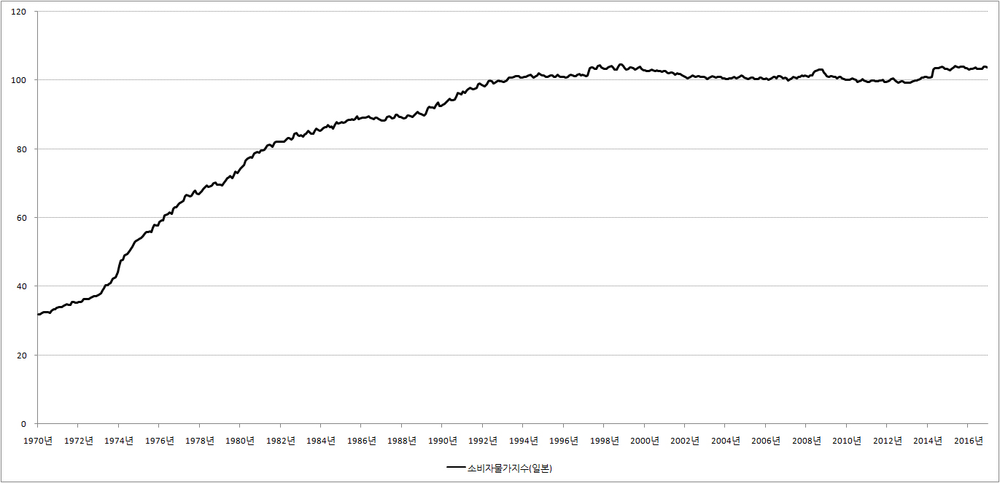
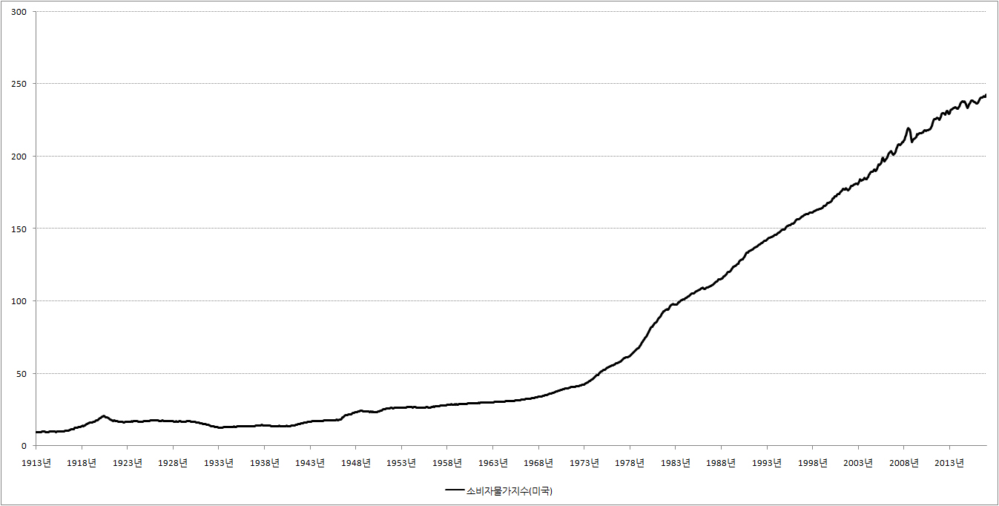

■ 인플레이션
1.인플레이션의 뜻
물가상승을 영어로 인플레이션(inflation)이라고 합니다. 좀 풀어서 길게 설명하면 ‘여러 가지 물건의 가격이 상당히 오랫동안 오르는 현상’을 인플레이션이라고 합니다.
2.인플레이션의 이유
인플레이션, 쉽게 말해서 물가가 상승하는 원인은 크게 봐서 2가지가 있습니다. 첫 번째는 소비자들과 사장님들이 열심히 쇼핑과 투자를 해서 물가가 상승하는 경우입니다. 예를 들어 지금 현재 대한민국 경제가 봄날이라고 합시다. 경제가 꽃피는 봄이라면 우리의 주머니가 넉넉합니다. 그리고 경제가 잘나가는 만큼 회사에서 해고 될 염려도 없습니다. 따라서 우리는 미래에 대한 두려움 없이 오늘에 충실한 삶을 살아갈 수 있습니다. 따라서 배고프면 사 먹고, 물욕이 생기면 카드를 긁습니다.
하지만 생산에는 한계가 있습니다. 공장을 24시간 돌려도 우리의 물욕을 모두 충족시킬 수는 없습니다. 하루 온종일 기계를 돌려도 생산할 수 있는 핸드폰이 10개 뿐 인데 사람들이 11개, 12개를 사겠다고 몰려들면 핸드폰 가격이 상승할 수밖에 없습니다. 이런 현상을 어려운 말로 수요견인 인플레이션이라고 합니다.
한편 수요와 상관없이 생산비용이 상승해서 물가가 상승하는 경우도 있습니다. 예를 들어 핸드폰을 만드는데 필요한 원자재 가격이 폭등했다고 합시다. 이렇게 되면 핸드폰공장 사장님은 핸드폰 판매 가격을 올릴 수밖에 없습니다. 이렇게 원자재나 임금상승 등으로 생산비용이 증가하고, 그 결과 물건의 가격이 상승하는 것을 유식하게 비용인상 인플레이션이라고 합니다.
3.인플레이션의 역사
우리에게 물가상승은 너무나 당연한 현상입니다. 태어나서 지금까지 단 한 번도 물가가 내리는 현상을 본적이 없기 때문입니다.
{kind=link}
하지만 눈을 조금만 돌리면 물가상승은 당연한 현상이 아니라는 것을 알 수 있습니다. 가까운 일본의 경우가 그렇습니다. 일본은 20년째 물가가 제자리걸음을 하고 있습니다.
※ 일본 소비자물가지수 그래프

{kind=link}
그리고 우리의 시야를 100년 전, 200년 전으로 돌리면 사태는 또 달라집니다. 아래의 그래프는 미국의 소비자물가지수를 보여줍니다. 1950년대 이전 까지만 해도 물가가 상당히 안정적이라는 것을 알 수 있습니다.
※ 미국 소비자물가지수 그래프

{kind=link}
1900년대 이전은 어떠했을까요? 1900년대 이전의 역사는 제가 살아보지 않아서 모르겠는데... 들리는 소문에 의하면 물가가 상승하는 것이 오히려 신기한 현상이었다고 합니다. 그 대표적인 실례가 가격혁명이라고 불리는 천지개벽할 사건이었습니다.
가격혁명은 16세기 유럽에서 있었던 일로 약 100여년 동안 물가가 3~4배 뛴 현상을 말합니다. 혁명이라는 말이 상징하듯이 엄청난 사건이었죠. 그런데 100년 동안 3~4배 정도 물가가 상승했다면 1년 동안 물가가 얼마나 상승한 것일까요? 놀라지 마십시오. 평균 1.２%~1.３%입니다. 겨우 1년 동안 물가가 1.３% 뛴 것을 가지고 혁명이라는 말을 붙였던 것입니다. 그만큼 물가가 상승하는 게 신기한 현상이었다는 것을 상징하는 말이죠.
그런데 사실 궁금합니다. 16세기를 살던 사람들에게 평균 1.3%물가 상승이 그토록 놀라운 일이었는지... 혹시 당대를 살아본 경험이 있는 시간여행자 분께서 이 글을 보셨다면 제보 바랍니다.
4.관련 경제용어
▶ 디플레이션(deflation) : 물가하락을 영어로 디플레이션이라고 합니다. 언뜻 생각하면 물가가 내려면 좋을 것 같지만 물가상승보다 더 무서운 것이 디플레이션입니다. 저체온이 우리의 생명에 치명타를 입히듯이, 물가하락도 경제에 치명타를 입힙니다.
▶ 자산디플레이션 : 자산, 쉽게 말해서 돈 되는 여러 가지 재산의 가격이 하락하는 현상을 자산 디플레이션이라고 합니다.
▶스태그플레이션(stagflation) : 대체로 경제가 좋아지면 물가가 상승하는 경향이 있습니다. 경제가 봄날을 맞이하면 사람들의 주머니가 넉넉해지고, 그 결과 열심히 쇼핑을 해서 물가가 상승하기 때문이죠. 그런데 경제가 엉망인데도 불구하고 물가가 상승할 때가 있는데 이런 현상을 스태그플레이션이라고 합니다.
▶ 에그플레이션(agflation) : 농업을 뜻하는 ‘agriculture’와 물가상승을 뜻하는 ‘inflation’이 합쳐져 만들어진 용어입니다. 쉽게 말해서 농산물가격 폭등으로 물가가 상승하는 것을 말합니다. 참고로 egg(달걀) + 인플레이션(inflation)이 절대로 아닙니다. 잠시 잠깐 방심하면 에그플레이션을 eggflaion으로 착각할 수 있으니 조심하시기 바랍니다.
▶ 하이퍼인플레이션(hyperinflation) : 물가가 적당히 상승하는 것이 아니라 미친 듯이 폭등하는 현상을 가리키는 말입니다. 교과서적으로 말하면 1달 만에 물가가 50%이상 상승하는 경우 하이퍼인플에이션이 발생했다고 합니다.